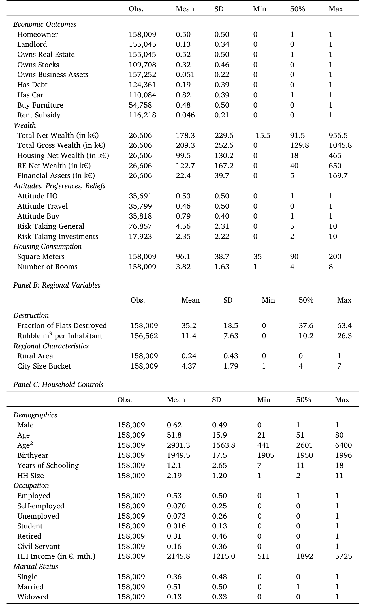
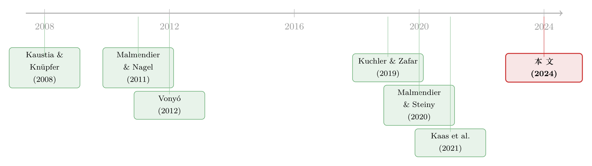

炸塌的不只是房子，还有买房的念头
本文读的是 Happel, Karabulut, Schäfer & Tüzel (2024, Journal of Financial Economics)：二战中德国住房被盟军轰炸夷平这件事，被作者当成一场「准自然实验」——那些在高破坏地区经历过战争的人，几十年后当上房主的概率显著更低（破坏率每升高一个标准差，房主概率下降约 3 个百分点）。而真正被改写的，不是他们的财富或风险偏好，而是他们对「拥有一套房」这件事本身的态度。
1 一个反直觉的开场
先问一个看起来理所当然的问题：一个人小时候眼睁睁看着自己的家被炸成废墟，长大以后，他会更想要、还是更不想要一套属于自己的房子？
凭直觉，答案可以朝两个方向走，而且两个方向都讲得通。
一种讲法是：房子代表安全感。心理学和住房社会学里有个词叫「本体性安全 (ontological security)」——一套自己的房子，是一个人对抗世界不确定性的锚。McCabe (2018) 用 Fannie Mae 的全美住房调查发现，人们买房的首要理由根本不是投资回报，而是「有个让家人感到安全的地方」。照这个逻辑，经历过战火、流离失所的人，反而应该更渴望拥有一套砸不烂、抢不走的房子，把它当作疗愈创伤的出口。
另一种讲法正相反：房子让你心碎。如果你亲历过「最大的一笔家庭财富在一夜之间化为瓦砾」，你可能从此对「把身家压在一栋不动产上」这件事心存芥蒂——既然房子可以这样消失，何必再被它绑住？
这就是这篇论文的张力所在。它不像很多家庭金融论文那样，从一个明确的理论预测出发去验证；它一上来就承认：「先验地，并不清楚战争破坏会把人推向哪一边」（"It is a-priori not clear..."）。于是，问题就从「我猜对了吗」变成了一件更干净的事——让数据来说，到底是哪一边赢了。
而答案，是心碎的那一边。
2 为什么是二战，为什么是德国
要回答「负向住房冲击如何改变人的态度」，最大的麻烦从来不是找不到冲击，而是冲击从来不孤单。
想想看，如果你用美国次贷危机里的「丧失抵押品赎回权 (foreclosure)」来研究——经历过法拍的人后来确实更不愿买房——但你怎么知道，让他们不买房的是「住房创伤」这个心理通道，还是同时砸下来的失业、收入下滑、信用记录受损、财富缩水？这些东西全都挤在同一个时间、同一批人身上，谁也摘不干净。这正是文献长期以来的痛点：这套「态度改变」的解释听上去很有道理，却始终无法和其它同期的经济因素切割开。
二战时期德国的住房破坏，恰恰提供了一把罕见的手术刀。理由有三层，作者层层铺垫：
第一，破坏的强度在城市之间差异巨大，而且这种差异在很大程度上是「随机」的。 盟军的轰炸，尤其是 1942 年 3 月那份《区域轰炸指令 (Area Bombing Directive)》之后，目标从工业设施转向了城市中心——选哪座城市下手，主要看建筑密度、有没有显眼地标、领航导航是否方便，而不是这座城市的经济重要性。Vonyó (2012) 直接检验过：战前工业化水平和某地区的破坏程度之间，没有统计上显著的关系。再加上天气、飞行员误差、技术故障这些彻头彻尾的随机因素（Friedrich, 2002；Akbulut-Yuksel, 2014），破坏率在地区间的分布，就有了「准外生」的味道。结果是，科隆 (Cologne) 整整 60% 的住房被彻底摧毁，而慕尼黑 (Munich) 只有 32%。
第二，破坏发生在几十年前，把「态度」和「当下的约束」从时间上拉开了。 论文用的数据是德国社会经济追踪调查 (German Socio-Economic Panel, SOEP)，覆盖 1985–2017 年——这已经是战争结束四十年之后了。如果一个人到了 1985 年、2000 年还是不愿当房主，你很难再把账算到「他眼下没钱」或「信贷紧张」头上，因为时间已经把那些短期冲击冲刷殆尽。剩下的，更像是一种沉淀下来的、持久的偏好。
第三，它是「财富冲击」和「消费冲击」的合体，而后者恰恰是被以往文献忽略的那一半。 作者在脚注里点得很清楚：和经验效应文献里那些纯金融冲击（股灾、通胀）不同，战争把房子炸了，既是财富的损失，也是消费的剥夺——尤其对一个孩子来说，他感受到的首先是「没地方住了」这种切肤的消费冲击，跟自家房子是租的还是买的没什么关系。这一点，为后文「态度改变」而非「财富效应」的结论埋下了伏笔。
3 识别策略：把「地区差异」和「世代差异」交叉起来
有了准外生的破坏率，下一个自然的问题是：光比较「高破坏城市」和「低破坏城市」的居民够不够？
不够。因为破坏严重的城市，往往本身就是大城市、市中心，那里的房价、租售结构、人口密度跟乡村地区天生不同——你比出来的差异，可能只是「城里人 vs 乡下人」，跟战争毫无关系。
于是真正关键的一步出现了：作者用的是一套双重差分 (difference-in-differences, DiD) 的设计，把地区维度和世代维度交叉起来。
它的逻辑是这样的：在同一个地区内部，比较「经历过二战的世代」和「战后出生的世代」在住房决策上的差距；然后，再把这个「世代差距」在高破坏地区和低破坏地区之间做第二重比较。换句话说，被识别出来的，是破坏率对「战争世代 vs 战后世代之差」的影响。
这套设计最漂亮的地方，是它允许放进 地区 × 年份固定效应 (region × year fixed effects)。这意味着任何随时间变化的地区特征——某座城市的房价涨了、某个州的信贷政策松了——都被这个固定效应一把吸收掉了。能这么干，正是因为识别用的是同一地区内部不同世代之间的对比，而不是跨地区的对比。
把它写成一个方程，核心就是那个交互项：
其中 \(y_{i,r,t}\) 是家庭 \(i\)（位于地区 \(r\)、在年份 \(t\)）是否为房主的指示变量。识别依赖的是 平行趋势假设 (parallel trends assumption)：假如没有二战破坏，战争世代和战后世代之间在住房决策上的差距，本应在不同破坏程度的地区里是一样的。
怎么验证这个看不见的「平行趋势」？作者祭出了一个很聪明的证伪检验 (falsification test)：他们找来一批 1955 年之后才移民到德国的人。为什么是 1955？因为到那时，德国的人均住房存量已经恢复到了战前水平——这些移民虽然住在「曾经的高破坏地区」，但他们本人并没有经历过那场破坏。如果驱动结果的真是「亲历创伤」，那这批人身上就不该有效应。结果，确实没有。这一刀，干净利落地把「亲历的经验」和「地区的某种持久属性」切开了。
4 数据
数据来自 SOEP，一个具有全国代表性的德国家庭追踪面板。观测单位是家庭-年 (household-year)。完整面板有 315,608 个家庭-年观测；作者用一套相当保守的筛选规则（户主须在德国出生且具德国国籍、1989 年前须居住在西德、须住在「私人住宅」而非宿舍养老院、租户月租须高于 100 欧元、须居住在有破坏数据的西德地区、户主年龄在 21–80 岁之间），最终得到 158,009 个家庭-年观测作为主样本。
破坏数据来自历史统计 Kästner (1949)，西德被划分为 75 个「空间规划区 (Raumordnungsregion)」，类似美国的都会统计区。
下面这张表是主样本的概览。

Table 1: presents summary statistics for the main sample. We win-
几个值得记住的数字：样本里的房主比例是 50%，与官方统计吻合；家庭住所的平均面积是 96 平方米；家庭净财富均值 €178,300、毛财富 €209,300（说明德国家庭普遍负债很低）；而西德各地区在二战中的破坏不可谓不惨烈——平均有 35% 的住房被摧毁。
5 主要结果：心碎的那一边赢了
绕了这么大一圈，结论本身可以一句话说完：
在高破坏地区经历过二战的世代，几十年后成为房主的概率显著更低。 具体的量级是——破坏率每升高一个标准差，战争世代的房主概率下降约 3 个百分点。这个结果在加入了地区差异和一大堆家庭特征控制之后依然稳健，作者还用各种样本限制、替换世代定义、替换破坏度量做了一系列敏感性检验。
但如果故事到这里就停了，它不过是又一篇「经验效应」的实证。这篇论文真正想钉死的，是下一个问题——为什么？
这才是全文的重心。作者像剥洋葱一样，把所有「竞争性解释」一层层剥掉：
会不会只是财富效应？ 也就是说，他们不是不想买，而是被战争搞穷了、买不起。作者的反驳很犀利：如果纯粹是没钱，那这些人心里应该还是想要房子的，只是被约束挡住了。可数据显示，他们连「想要」的意愿都更弱。更直接的证据来自财富结构——破坏暴露家庭的金融财富和别人相若，总财富却更低（恰恰因为他们房子持有得少）；而在毛财富为正的家庭里，他们的金融资产反而显著更高。结果是，他们的资产组合系统性地从住房偏向了金融资产：破坏率每升一个标准差，金融资产占比高出 3 个多百分点。一个买不起房的穷人，是不会有这种「主动把钱从砖头搬进金融资产」的画像的。
会不会是供给侧、是战后住房政策养成的「租房习惯」？ 战后德国搞了大规模的「社会住房 (Sozialer Wohnungsbau)」，1950–1961 年间新增了约五百万套住房单位，大多是用来出租的。会不会是这些人从小住惯了政府提供的租赁房，养成了租房的惯性？作者去查了 1950 年代早期社会住房建设的数据——对战争世代的房主态度或决策没有显著影响。他们还检验了一个更刁钻的反例：纯投资性质的房产（即不自住、纯粹拿来投资的房地产）。如果只是「偏好租房的惯性」，那它不该影响投资房；可结果是，对投资性房产的负向反应甚至更强。这恰恰说明，被改变的不是「住哪儿」的习惯，而是「要不要拥有房产」这件事本身的态度。
会不会是风险偏好、收入、失业风险、人力资本投资、信贷可得性？ 作者逐一排查，都找不到支持性的证据。
剥到最后，剩下的那个核心，就是态度 (attitudes)。SOEP 里有一道主观问题，直接问受访者「拥有住房有多重要」。作者先证明这道题的回答确实能强力预测真实的住房产权决策，然后发现：经历过战争破坏的家庭，几十年后在这道题上表达出显著更弱的房主偏好。而正是这种态度的转变，构成了所有基准结果背后的那把钥匙。
还有一个漂亮的延伸：这种态度改变是领域特定的 (domain-specific)。战争破坏让人不爱买房，但并没有让他们少买其它东西——家具、汽车这些耐用消费品的购买不受影响。相反，他们对非住房消费（旅游是个典型例子）的偏好反而更强。被改写的，精确地只是「住房」这一个心理账户，而不是泛泛的消费或风险态度。这与 Malmendier and Nagel (2011) 强调的「经验影响的领域特定性」一脉相承。
而且，态度的转变还溢出到了住房消费本身：战争世代、高破坏地区的家庭，几十年后倾向于住在显著更小的房子里。所以这不仅是「投资品」意义上的退缩，也是「消费品」意义上的退缩——对「住房」这件事，他们整体上变得更克制了。
6 这件事的份量：半个增长之谜
读到这里，一个聪明的读者会问：几个百分点，听起来不大，值得发 JFE 吗？
作者把这个微观系数放回宏观，算了一笔账，份量立刻不同了。
德国的房主比例长期是个谜——2010 年只有 44%，是当时欧盟最低。以往的解释要么是高房产交易税、没有按揭利息抵税、庞大的社会住房（Kaas et al., 2021），要么是低通胀经历（Malmendier and Steiny, 2020）。本文提供了一个全新的、附加的渠道：那场二战破坏，通过改写一代人的态度，长久地压低了德国的房主比例。
具体而言，作者的估计意味着：若没有战争破坏，西德本地人在 1985 年（样本起点）的房主比例本应高出约 5 个百分点。而反过来，随着战争世代在人口中的占比逐年下降，这个「态度拖累」也在消退——它可以解释 1985 年以来德国总体房主比例上升幅度的一半。一个被炸塌的世代慢慢老去、退场，一个国家的住房产权率才慢慢爬升。这就把一个微观的心理效应，接到了一条宏观的长期趋势上。
7 文献脉络
这篇论文坐在两条河流的交汇处。
第一条河是 经验效应 (experience effects)。它的源头是 Kaustia and Knüpfer (2008)——他们发现投资者会「高估」自己亲历过的 IPO 回报。真正把这条河推成主流的是 Malmendier and Nagel (2011)：人在年轻时经历过的宏观冲击（高通胀、股灾），会终身地塑造他的经济行为和金融选择。此后，Kuchler and Zafar (2019) 证明个人亲历的房价波动会影响他对全国房价的预期；Kindermann et al. (2020) 则发现房主和租客会基于各自的主观经验，对未来房价形成系统性不同的预期。本文是这条河里第一个把「住房破坏」这种兼具财富与消费双重属性的冲击引进来的，并且把效应精确地定位在「态度」这个机制上。
第二条河是 德国房主之谜。Malmendier and Steiny (2020) 把跨国房主率差异归因于通胀经历；Kaas et al. (2021) 用一个生命周期模型，把德国的低房主率归因于税收和社会住房等制度因素。本文不否定它们，而是补上一块新的拼图：历史的创伤。
再往外一圈，是用 历史自然实验做因果识别的「History & Finance」传统——Pascali (2016)、Levine et al. (2020) 用历史事件去解释当代金融结果，本文的二战轰炸正是这一路数。

（顺带一提，关于「亲历的危机如何长久地刻进一个人的决策」，本博客此前也聊过两篇相邻的研究：一是银行家年轻时见过同行成片倒下、日后反而更稳健的《他们年轻时见过银行成片倒下》，二是把通胀经验拆进交易行为的《通胀来了，股票是「真资产」还是「纸面财富」》。而在「住房产权」这条线上，《半套房子：当「租还是买」不再是单选题》和《被自己 3% 的房贷「锁」在原地》分别从制度设计和利率锁定的角度，触碰了「人为什么不买/不动房」这同一个谜面。）
8 评论与延伸（Q&A + 研究方向）
(a) 几个可能的疑问
Q：轰炸真的「随机」吗？盟军挑大城市下手，会不会本身就埋了内生性？
这是识别的命门，作者花了很大力气堵。关键证据有三：其一，Vonyó (2012) 显示战前工业化水平与破坏程度之间无显著关系；其二，目标选择主要看建筑密度、地标、导航便利，外加天气、飞行员误差等随机因素；其三，地区 × 年份固定效应吸收掉了一切随时间变化的地方特征，识别只用同一地区内部的世代对比。它不需要破坏「绝对随机」，只需要在控制了这些固定效应后、破坏率相对于「世代间住房决策之差」是准外生的。
Q：那个 1955 年移民的证伪检验，到底证伪了什么？
它要排除的是这样一种担忧：高破坏地区或许有某种持久的、与战争无关的属性（比如城市文化、租赁市场结构），是它、而不是「亲历创伤」在压低房主率。1955 年后才来的移民，住在同样的地区、面对同样的市场，却没亲历那场破坏。他们身上没有效应，就说明驱动结果的是「人经历了什么」，而非「这块地方是什么样」。
Q：怎么排除这就是个穷出来的「财富效应」？
最有力的一招是看资产组合。如果只是被战争搞穷、买不起，他们应该「心里想要、行动受限」，且组合里没有特别的倾向。但数据显示他们连意愿都更弱，且在毛财富为正的群体里，金融资产显著更高、组合系统性地从住房偏向金融资产（破坏率每升一个标准差，金融资产占比高 3 个多百分点）。这是「主动选择不持有房产」的画像，不是「被动买不起」。
Q：3 个百分点听起来很小，凭什么说重要？
因为它能被放大成一个宏观事实：反事实下西德 1985 年房主率本应高约 5 个百分点，且战争世代的人口退场能解释 1985 年以来总体房主率上升的一半。微观系数小，但乘上一代人的体量和半个世纪的跨度，就成了解释一国住房产权率长期趋势的关键变量。
Q：这和用「法拍 (foreclosure)」研究住房创伤有何本质区别？
法拍冲击和失业、收入下滑、信用受损、财富缩水高度捆绑在同一时间同一批人身上，几乎无法把「态度」这个心理通道单独摘出来。二战破坏发生在四十年前，短期约束早已冲刷殆尽，且地区 × 世代的交叉设计加上随机化的轰炸，能把心理机制和当下的经济约束干净地切开——这正是本文相对于法拍类研究的识别优势。
Q：为什么效应是「领域特定」的，而不是让人变得整体更保守、更厌恶风险？
因为如果是风险偏好整体变了，应该看到耐用消费品购买、其它资产配置也受影响；可数据显示家具、汽车不受影响，非住房消费（如旅游）偏好反而更强，纯投资性房产的负向反应甚至更大。被改写的精确地只是「住房」这一个心理账户。这与经验效应文献强调的领域特定性吻合。
(b) 几个可能的研究问题与提案
1. 把「住房创伤」搬到信用市场：经历过债务危机的世代，会更厌恶「负债持有资产」吗？
【经济故事】本文证明了住房创伤改写态度。一个自然的平行问题是：在主权债务危机、恶性通胀或大规模违约中长大的人，成年后是否系统性地回避杠杆、回避公司债投资、或在自家企业里更少举债？机制同样是「亲历的财富/消费冲击 → 持久的态度改变」，但落点从住房换成了信用与杠杆。 【可行性】中。需要把某次本地化的信用危机（如某国的银行国有化、债务重组）的暴露强度，与几十年后的家庭/企业杠杆决策对接。识别上可借鉴本文的「地区 × 世代」交叉设计，难点在于找到一个暴露强度在地区间准外生、且有长期追踪数据的环境。
2. 外资持有人会不会有「经验效应」？经历过东道国资产被摧毁/冻结的国际投资者，日后更回避该国资产吗？
【经济故事】把经验效应从家庭推到机构。如果一家国际资管曾在某次战争、没收或资本管制中损失过对某国的持仓，它日后对该国（乃至相似国家）的配置是否长久偏低？这关乎「创伤记忆」是否会沉淀进跨境资本流动，并影响一国债券的外资持有结构与流动性。 【可行性】中偏低。机构层面的「亲历」难以精确度量，且机构人员流动会稀释记忆。可考虑用基金经理个人履历中的「危机暴露」匹配其后续的国别配置，数据上可行但识别较弱，需谨慎处理选择性。
3. 住房态度的代际传递：父母的战争创伤，会「遗传」给从未经历过的子女吗？
【经济故事】本文的证伪检验显示，没亲历的人没有效应。但一个更细的问题是：在亲历者的家庭内部，这种态度会不会通过言传身教传给下一代？若是，则创伤的宏观影响会比「随世代退场而消退」更持久。 【可行性】高。SOEP 本身是多代追踪面板，可直接比较「父母为高破坏地区战争世代」的子女与对照组的住房态度与决策，识别清晰，数据现成。这几乎是本文最自然、最 doable 的后续。
4. 住房组合的「再平衡」是否抬高了这代人的金融市场参与？
【经济故事】本文发现破坏暴露家庭的组合从住房偏向金融资产。那么这是否意味着，住房创伤间接地提高了他们的股票/债券市场参与率？这会把「住房创伤」与经典的「股市有限参与之谜」(Vissing-Jorgensen, 2002) 连起来。 【可行性】高。SOEP 含有金融资产明细，可直接检验破坏暴露对股票/基金持有率的影响，并探究住房与金融资产之间是否存在挤入/挤出。
9 我的判断与参考文献
贡献。 这篇论文最让我欣赏的，是它的「克制」。它没有抢着告诉你战争创伤会怎样改变人，而是先承认理论上两个方向都成立，再用一个设计精良的准实验让数据裁决。它的真正贡献不在于「发现负向住房经历压低房主率」——这个相关性早有人猜——而在于干净地把「态度」这一个心理机制，从财富、风险偏好、供给侧、信贷约束等一大堆竞争解释里单独摘了出来，并用资产组合的「主动再平衡」、纯投资房产的更强反应、消费领域的特定性这几个互相印证的证据把它钉死。把微观系数接回「德国房主之谜」和「1985 年以来房主率上升的一半」，更是把份量撑了起来。
对识别的担忧。 我有两点保留。其一，破坏的「准外生性」终究是基于「战前工业化与破坏无关」这类间接证据，而轰炸目标毕竟与城市规模、密度相关，地区 × 年份固定效应能吸收随时间变化的部分，却未必能完全洗净「大城市居民本就有不同住房文化」这类与世代交互的隐忧——1955 年移民检验缓解了这一点，但移民本身是高度选择性的群体，这个对照组的可比性值得再追问。其二，核心机制依赖 SOEP 的主观态度问题，这类自报变量的测量与表达偏差，在跨世代比较中可能并非中性。
后续想看到什么。 我最想看到的是代际传递的检验（上面提案 3）——它能直接回答一个更大的问题：创伤的宏观印记，究竟是随亲历者退场而注定消退，还是会沿着家庭这条线悄悄延续下去。其次，我希望看到一个把「住房态度」与「金融市场参与」打通的分析，因为本文已经把组合再平衡这条线索递到了门口。
参考文献
- Akbulut-Yuksel, M. (2014). Children of war: The long-run effects of large-scale physical destruction and warfare on children. Journal of Human Resources 49(3), 634–662.
- Kaas, L., Kocharkov, G., Preugschat, E., & Siassi, N. (2021). Low homeownership in Germany — a quantitative exploration. Journal of the European Economic Association 19(1), 128–164.
- Kaustia, M., & Knüpfer, S. (2008). Do investors overweight personal experience? Evidence from IPO subscriptions. Journal of Finance 63(6), 2679–2702.
- Kesternich, I., Siflinger, B., Smith, J. P., & Winter, J. K. (2014). The effects of World War II on economic and health outcomes across Europe. Review of Economics and Statistics 96(1), 103–118.
- Kindermann, F., Le Blanc, J., Piazzesi, M., & Schneider, M. (2020). Learning about housing cost: Survey evidence from the German house price boom. Working paper.
- Kuchler, T., & Zafar, B. (2019). Personal experiences and expectations about aggregate outcomes. Journal of Finance 74(5), 2491–2542.
- Levine, R., Lin, C., & Xie, W. (2020). The African slave trade and modern household finance. Economic Journal 130(630), 1817–1841.
- Malmendier, U., & Nagel, S. (2011). Depression babies: Do macroeconomic experiences affect risk taking? Quarterly Journal of Economics 126(1), 373–416.
- Malmendier, U., & Steiny, A. (2020). Rent or buy? Inflation experiences and homeownership within and across countries. Working paper.
- Pascali, L. (2016). Banks and development: Jewish communities in the Italian renaissance and current economic performance. Review of Economics and Statistics 98(1), 140–158.
- Piazzesi, M., Schneider, M., & Tüzel, S. (2007). Housing, consumption and asset pricing. Journal of Financial Economics 83(3), 531–569.
- Vissing-Jorgensen, A. (2002). Towards an explanation of household portfolio choice heterogeneity: Nonfinancial income and participation cost structures. NBER Working Paper.
- Vonyó, T. (2012). The bombing of Germany: The economic geography of war-induced dislocation in West German industry. European Review of Economic History 16(1), 97–118.
- Wertheimer, R. G. (1958). The miracle of German housing in the postwar period. Land Economics 34(4), 338–345.